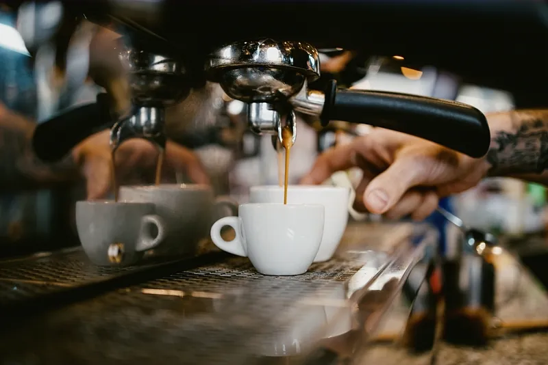
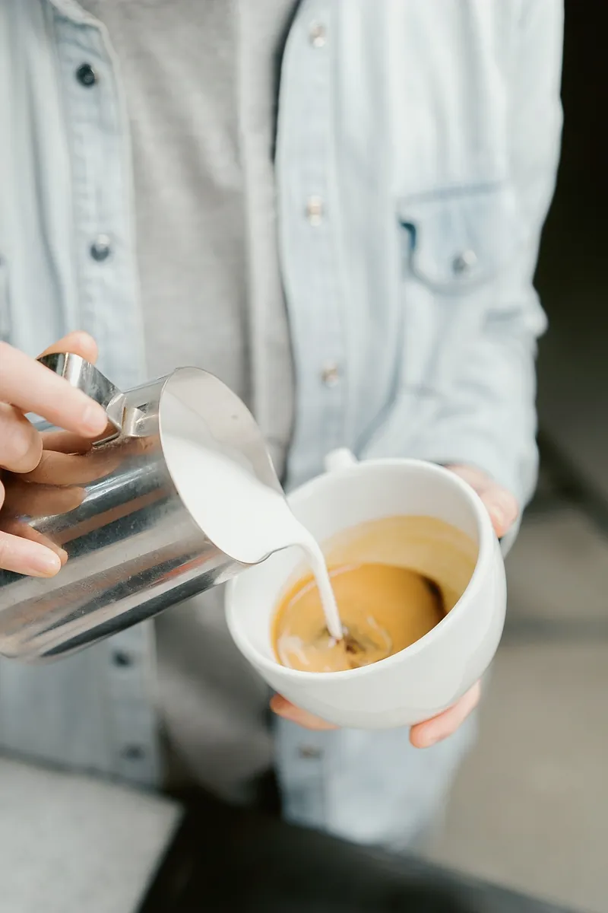
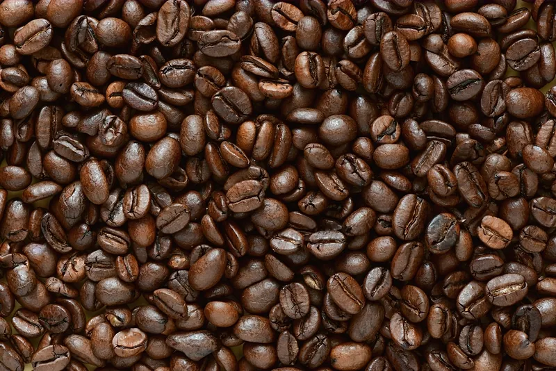
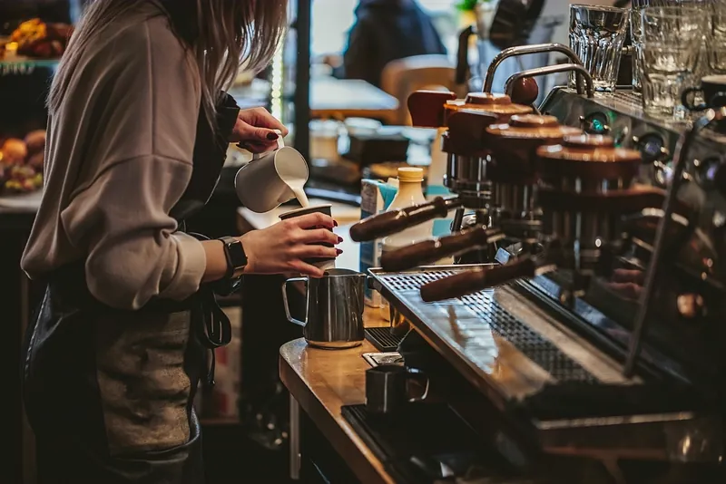

Good coffee,
no theatre.
We roast a little, bake every morning, and keep the kitchen on until three. Pull up a stool.
A café that behaves like a kitchen.
Everything on the board is made a few steps from where you drink it. The blend is roasted at the back on a Tuesday, the buns are knotted by hand before six, and the kitchen runs a short list well rather than a long one badly.
There are 24 seats and no bookings — mornings are busy, three o'clock is calm, and either is a perfectly good time to sit for an hour with one filter coffee. Nobody will hurry you.
16 things on the board, from —.

Three we'd point at.
Tap through to the board and any of it can go straight on your tray.

We roast 4 coffees, and no more.
One house blend for the machine, two single origins that change with the season, and a decaf nobody has to apologise for. Bags are ground to order at the counter.
Build a tray, send it up.
Tap anything on the menu and it lands on your tray. Send it to the counter and we'll start it — you pay when you collect, and the tray remembers itself if you wander off mid-scroll.
Nothing is charged online. It's a running order, the way you'd say it out loud at the till.
